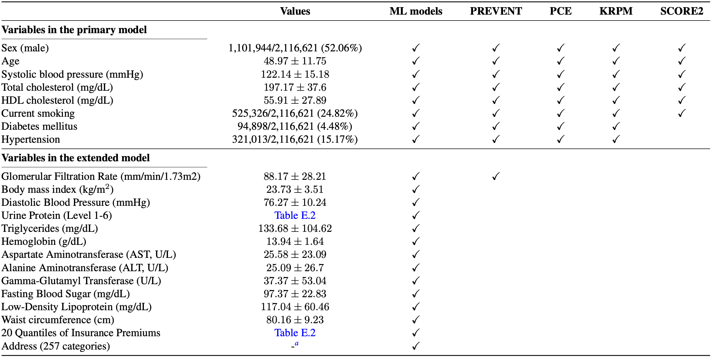
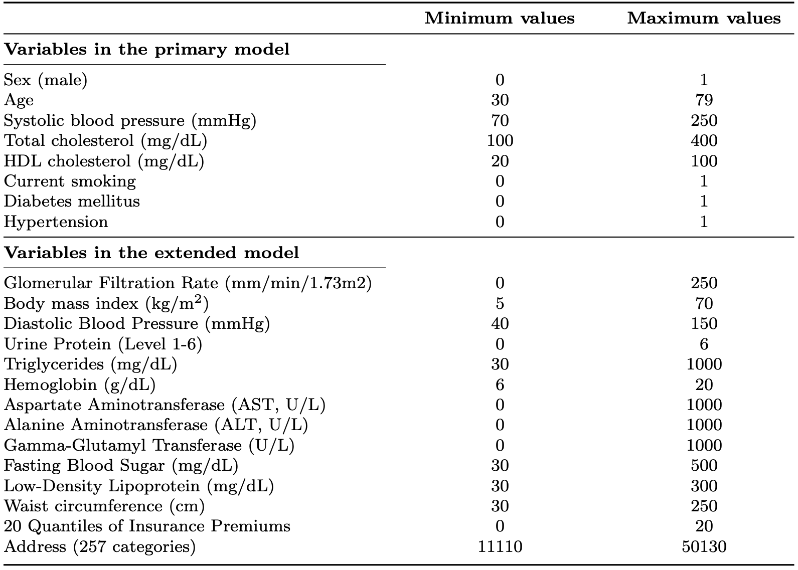

1Cardiovascular Center, Internal Medicine, Seoul National University Bundang Hospital 2Department of Internal Medicine, Seoul National University
Abstract
Predicting 10-year atherosclerotic cardiovascular disease (ASCVD) risk is a clinically important task in cardiology.
In recent years, numerous studies have shown that machine learning (ML) models outperform conventional equation-based risk prediction models such as the Pooled Cohort Equations (PCE), PREVENT, and SCORE2.
Recently, the Kolmogorov–Arnold Network (KAN) has been proposed as a more interpretable alternative to traditional multi-layer perceptrons (MLPs), and this study develops a 10-year ASCVD risk prediction model using KAN.
This page provides your ASCVD risk estimation using a KAN model trained on health screening data from approximately 2 million Korean individuals.
You can enter your health screening information below to view your personalized risk prediction.

Table 1. Baseline characteristics of the study population and predictor variables used in each model. Eight risk factors listed in the upper panel are included in the primary model, while 14 variables in the lower panel are added in the extended model.

Table 2. Minimum and maximum thresholds used for outlier filtering. The thresholds were intentionally set leniently to exclude only a small number of data points.